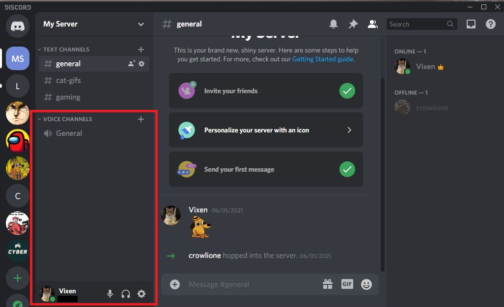

What is a Voice Channel
Here you will learn what a voice channel in Discord is.
Voice channels are where you can hang out over voice and video. There is no calling required - you just click on a voice channel to enter it. People who are also in the server can see you are in the voice channel and can join to talk at any timeas well.
Here is where you can find the voice channel and its settings:
